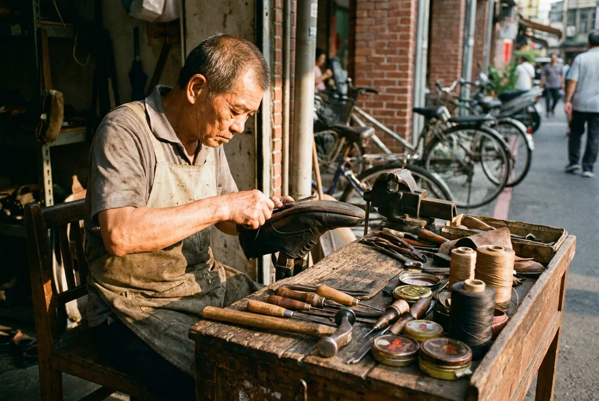

修鞋匠的工作台:一個老師傅與他的城市角落
在街角不到一坪的攤位上,一位修鞋師傅用四十年磨出一套無人教過的工作系統。我們和他聊了一個下午的鞋、工具與城市。

陳師傅的攤位,藏在一條老街騎樓的轉角。不到一坪的空間裡,一張矮木桌、一只磨得發亮的鐵砧、幾排掛在牆上的鞋楦,構成他四十年來的整個世界。我們抵達時,他正低頭縫一只開了口的皮鞋,手上的動作快得像不需要思考。
「鞋子會說話,」他頭也不抬地說,「你拿來我看一眼,就知道你走路重心偏哪邊、平常都走什麼路。」對他而言,每一雙磨損的鞋都是一份病歷,而他的工作,是把人與鞋之間那條被走壞的關係重新縫好。
一張桌子就是一套系統
最讓我們著迷的,是那張看似雜亂的工作台。錐子、線軸、膠罐、鞋釘,看似隨手一放,實際上每樣東西都在伸手就能拿到的固定位置。「東西放哪裡,我閉著眼睛都摸得到,」他說。這不是收納,而是一套用身體記住的動線——四十年來,他的手早已把這張桌子的座標背得滾瓜爛熟。
沒有人教過他怎麼擺。這套系統是時間長出來的:哪個工具用得勤,就離手近一點;哪個少用,就退到角落。一張桌子,於是成了他工作習慣最誠實的地圖。我們在精品工坊裡讚嘆的「人因設計」,在這裡早被一雙手默默實踐了半輩子。
修補,是一種逆流的價值
在一個鼓勵汰換的時代,修鞋這門生意顯得有點逆流。「現在的鞋,有些壞了根本沒辦法補,黏死的,」他攤開手,「但還是有人願意把一雙穿了十年的鞋拿來,寧可花錢補,也捨不得丟。」對這些客人而言,修的不只是鞋,還有一段走過的路。
他說,最有成就感的,不是把鞋修得多新,而是讓它「還能再陪人走幾年」。這句話聽起來樸素,卻精準地說中了某種正在被遺忘的設計倫理:好的東西,值得被修,而不是被丟。
城市角落的最後一盞燈
訪談的尾聲,夕陽斜斜照進騎樓,把他的工作台鍍上一層暖金。我們問他,有沒有想過收攤。他笑了笑:「只要還有人拿鞋來,我就還在這裡。」
像陳師傅這樣的街角職人,正一個個從城市裡消失。他們不在任何設計地圖上,卻用最樸實的方式,維繫著城市與人之間那層細密的日常織理。下次經過街角的修鞋攤,不妨停下來看一眼——那張小小的工作台,或許是這座城市裡最被低估的一件設計作品。
本文為格物誌示範用途之原創編輯內容。文中人物與情節為示意。